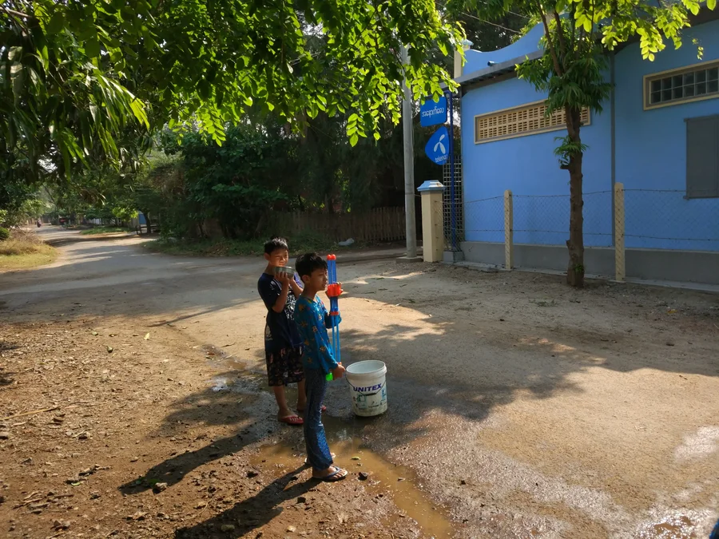

National FestivalApril 14, 2026 — Opening Day
Pi Mai Lao — Lao New Year
Nationwide (Luang Prabang, Vientiane & 6 Provinces)
Pi Mai — the Lao New Year Water Festival — is the country's most joyful national celebration, rooted in Theravada Buddhist and Hindu traditions marking the sun's entry into Aries. Streets erupt in cheerful water fights that symbolise washing away bad luck; anyone outdoors gets thoroughly soaked, tourist included. This is participation, not observation.
In 2026, the Lao Brewery Company is coordinating 18+ official Grand Pi Mai events across six provinces — the most geographically expansive celebration in recent memory. In Luang Prabang, the sacred Prabang Buddha image is carried in public procession to Wat Mai, accompanied by monks in saffron robes, traditional musicians, and elaborate floral displays.
- Venues: Mekong Riverfront (Vientiane), Lane Xang Square (Luang Prabang), +4 provinces
- Expect: Prabang Procession, Nang Sangkhan (Miss New Year) float parade, sand stupa building, water fights
- Pack: Waterproof phone pouch — you will get soaked on April 14
- Book early: Hotels in Luang Prabang and Vientiane fill 6–8 weeks in advance
- Pre-festival: Temple cleaning ceremonies and sand stupa building begin April 7–13